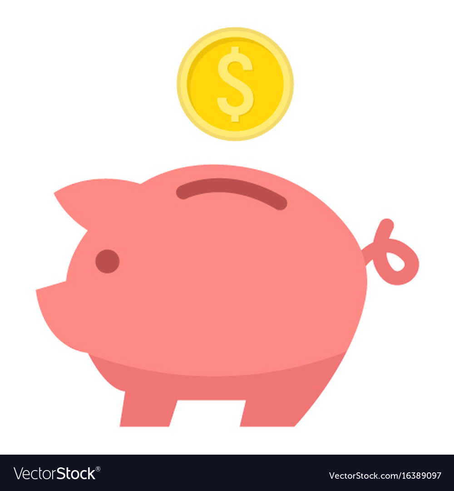

One of the best ways to save money is by visualizing what you are saving for. If you need motivation, set saving targets along with a timeline to make it easier to save. It's important to keep track of your spending. Create a spreadsheet of your finances so you can see how much you have to spend each month.You'll need to be smart with food shopping.When you want some new clothes always go to the cheapest one yet it looks incredible like in the thrift store.